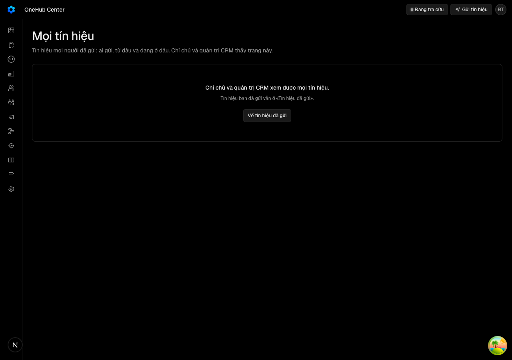

Hôm nay mỗi người chỉ thấy tín hiệu của mình; quản trị chỉ có vài dòng tổng kết trong terminal sau lệnh kéo về, không thấy tên ai. Cần thấy để hỏi lại người gửi và để đo ngưỡng sống của LT2 trên màn hình.
docs/superpowers/specs/2026-10-14-moi-tin-hieu-cho-quan-tri-design.md
| Eval | Tiêu chí | Loại | Verdict | run_id | verified_at |
|---|---|---|---|---|---|
| E1 | AC-1 | test | PASS | minted-moi-tin-hieu-cho-quan-tri-E1-r2 | 2026-10-14T03:58:18Z |
| E2 | AC-2 | test | PASS | minted-moi-tin-hieu-cho-quan-tri-E2-r1 | 2026-10-14T03:36:35Z |
| E2b | AC-2 | test | PASS | minted-moi-tin-hieu-cho-quan-tri-E2b-r1 | 2026-10-14T03:36:35Z |
| E3 | AC-3 | ui-check | PASS | minted-moi-tin-hieu-cho-quan-tri-E3-r1 | 2026-10-14T03:36:35Z |
| E3b | AC-3 | test | PASS | minted-moi-tin-hieu-cho-quan-tri-E3b-r1 | 2026-10-14T03:36:35Z |
| E4 | AC-4 | test | PASS | minted-moi-tin-hieu-cho-quan-tri-E4-r1 | 2026-10-14T03:36:35Z |
| E4b | AC-4 | test | PASS | minted-moi-tin-hieu-cho-quan-tri-E4b-r2 | 2026-10-14T03:58:18Z |
| E5 | AC-5 | test | PASS | minted-moi-tin-hieu-cho-quan-tri-E5-r2 | 2026-10-14T03:58:18Z |
| E6 | AC-6 | test | PASS | minted-moi-tin-hieu-cho-quan-tri-E6-r1 | 2026-10-14T03:36:35Z |
| E7 | AC-7 | test | PASS | minted-moi-tin-hieu-cho-quan-tri-E7-r2 | 2026-10-14T03:58:18Z |
| E8 | AC-8 | test | PASS | minted-moi-tin-hieu-cho-quan-tri-E8-r1 | 2026-10-14T03:36:35Z |
| E8b | AC-8 | script | PASS | minted-moi-tin-hieu-cho-quan-tri-E8b-r1 | 2026-10-14T03:36:35Z |
| E8c | AC-8 | script | PASS | minted-moi-tin-hieu-cho-quan-tri-E8c-r1 | 2026-10-14T03:36:35Z |
| E9 | AC-9 | test | PASS | minted-moi-tin-hieu-cho-quan-tri-E9-r2 | 2026-10-14T03:58:18Z |
| E10 | AC-10 | test | PASS | minted-moi-tin-hieu-cho-quan-tri-E10-r1 | 2026-10-14T03:36:35Z |
| E10b | AC-10 | ui-check | PASS | minted-moi-tin-hieu-cho-quan-tri-E10b-r2 | 2026-10-14T03:58:18Z |
| E11 | AC-11 | script | PASS | minted-moi-tin-hieu-cho-quan-tri-E11-r1 | 2026-10-14T03:36:35Z |
| E12 | AC-4 | judgment | PASS | — | — |
| E13 | AC-10 | script | PASS | design-gate-c614259119, design-gate-7f7ffdbee7 | 2026-10-14T03:36:35Z |
AC-1: Given một người có vai chủ hoặc quản trị, When họ mở «Tín hiệu đã gửi», Then ngay dưới đầu trang có thanh thẻ «Của tôi · Tất cả» (kiểu thẻ con dạng gạch dưới của các màn khác), thẻ đang mở được đánh dấu là trang hiện tại, mỗi thẻ là một đường dẫn riêng (`/<slug>/tin-hieu` và `/<slug>/tin-hieu/tat-ca`), và trang «Của tôi» vẫn đúng như LT2; Given vai thành viên hay vai chỉ OKR, Then trang «Tín hiệu đã gửi» không có thanh thẻ nào.
Ran 8 tests across 1 file. [819.00ms]
AC-2: (cross-layer) Given tín hiệu của nhiều người ở nhiều phòng ban, cả đã và chưa kéo về, When một chủ hay quản trị gọi thủ tục danh sách mọi tín hiệu (tRPC hay REST `GET /tin-hieu/tat-ca`), Then máy chủ trả mọi tín hiệu, mới nhất trước, mỗi tín hiệu kèm mã, tiêu đề, điều muốn làm, màn, lúc gửi, đã kéo về hay chưa, người gửi (mã và tên, vắng khi tài khoản đã bị xoá) và phòng ban lúc gửi (mã và tên, vắng khi không có); phản hồi không mang thư điện tử của ai; không dấu «đã kéo về» nào đổi; trên cùng kho, tập mã mà thủ tục này trả bằng đúng tập mã thủ tục kéo về trả, cùng phòng ban cho từng mã; Given vai thành viên hay vai chỉ OKR, Then máy chủ từ chối (403) và không trả dòng nào.
test-run: dropped crm_mv7k6jzk7mc2_test
AC-2: (cross-layer) Given tín hiệu của nhiều người ở nhiều phòng ban, cả đã và chưa kéo về, When một chủ hay quản trị gọi thủ tục danh sách mọi tín hiệu (tRPC hay REST `GET /tin-hieu/tat-ca`), Then máy chủ trả mọi tín hiệu, mới nhất trước, mỗi tín hiệu kèm mã, tiêu đề, điều muốn làm, màn, lúc gửi, đã kéo về hay chưa, người gửi (mã và tên, vắng khi tài khoản đã bị xoá) và phòng ban lúc gửi (mã và tên, vắng khi không có); phản hồi không mang thư điện tử của ai; không dấu «đã kéo về» nào đổi; trên cùng kho, tập mã mà thủ tục này trả bằng đúng tập mã thủ tục kéo về trả, cùng phòng ban cho từng mã; Given vai thành viên hay vai chỉ OKR, Then máy chủ từ chối (403) và không trả dòng nào.
test-run: dropped crm_mv7k6imr6jm4_test
AC-3: Given một người không phải chủ hay quản trị, When họ mở thẳng `/<slug>/tin-hieu/tat-ca`, Then trang giữ tiêu đề, thân trang nói «Chỉ chủ và quản trị CRM xem được mọi tín hiệu.» kèm nút về «Tín hiệu đã gửi», không có thanh thẻ, và trang đưa xuống trình duyệt không mang tiêu đề, tên người gửi hay trạng thái của tín hiệu nào.

AC-3: Given một người không phải chủ hay quản trị, When họ mở thẳng `/<slug>/tin-hieu/tat-ca`, Then trang giữ tiêu đề, thân trang nói «Chỉ chủ và quản trị CRM xem được mọi tín hiệu.» kèm nút về «Tín hiệu đã gửi», không có thanh thẻ, và trang đưa xuống trình duyệt không mang tiêu đề, tên người gửi hay trạng thái của tín hiệu nào.
test-run: dropped crm_mv7k6jzk7mc2_test
AC-4: Given thẻ «Tất cả» và bản vẽ lộ trình có danh sách tín hiệu, When quản trị nhìn một dòng, Then dòng có mã, điều đã kể (tiêu đề, dòng phụ «Muốn: …»), người gửi, phòng ban, màn, lúc gửi theo giờ Việt Nam, và trạng thái gồm nhãn có chấm màu theo nghĩa cộng một câu — đúng nhãn và đúng câu thẻ «Của tôi» hiện cho cùng mã; tiêu đề, tên người, tên phòng ban và màn được đánh dấu để trình duyệt không tự dịch.
Ran 2 tests across 1 file. [33.00ms]
AC-4: Given thẻ «Tất cả» và bản vẽ lộ trình có danh sách tín hiệu, When quản trị nhìn một dòng, Then dòng có mã, điều đã kể (tiêu đề, dòng phụ «Muốn: …»), người gửi, phòng ban, màn, lúc gửi theo giờ Việt Nam, và trạng thái gồm nhãn có chấm màu theo nghĩa cộng một câu — đúng nhãn và đúng câu thẻ «Của tôi» hiện cho cùng mã; tiêu đề, tên người, tên phòng ban và màn được đánh dấu để trình duyệt không tự dịch.
Ran 6 tests across 1 file. [844.00ms]
AC-5: Given một tín hiệu mà tài khoản người gửi đã bị xoá, một tín hiệu không có phòng ban, và bản vẽ lộ trình vắng hay không đọc được, When quản trị mở thẻ «Tất cả», Then dòng thứ nhất ghi người gửi «Không còn tài khoản», dòng thứ hai ghi «Chưa có phòng ban», mọi dòng hiện trạng thái của CRM («Chờ lấy về» hay «Chờ gom») kèm một dòng báo trạng thái sau gom chưa đọc được, và trang không vỡ.
Ran 5 tests across 1 file. [993.00ms]
AC-6: Given thẻ «Tất cả» có tín hiệu từ nhiều phòng ban, nhiều trạng thái, nhiều người gửi, When quản trị chọn giá trị ở ba bộ lọc phòng ban, trạng thái, người gửi, Then bảng chỉ còn dòng khớp (nhiều giá trị trong một bộ lọc là «hoặc», giữa các bộ lọc là «và»), mỗi giá trị lọc hiện số dòng của nó, giá trị lọc nằm trên đường dẫn và tải lại trang giữ nguyên, đổi lọc đưa về trang đầu, ba ô số không đổi theo lọc; lọc ra rỗng thì bảng nói không có tín hiệu khớp và có nút bỏ lọc.
Ran 5 tests across 1 file. [1221.00ms]
AC-7: Given thẻ «Tất cả», When quản trị nhìn đầu thẻ, Then có ba ô số «Tín hiệu 30 ngày qua», «Phòng ban có tín hiệu» (trong 30 ngày) và «Quá 7 ngày chưa có chỗ», với số 30 và 7 lấy từ cấu hình chung của tín hiệu; ô thứ nhất nói số gồm cả tín hiệu chưa lấy về, ô thứ hai nói số tín hiệu chưa có phòng ban, ô thứ ba nói trên bao nhiêu tín hiệu gửi quá 7 ngày; bản vẽ không đọc được thì ô thứ ba hiện «—» và nói chưa đọc được trạng thái sau gom, không hiện một số 0.
Ran 2 tests across 1 file. [597.00ms]
AC-8: (cross-layer) Given cùng một bộ tín hiệu trên máy chủ và cùng một bản vẽ lộ trình đọc được, When lệnh kéo về chạy và thẻ «Tất cả» đếm ở cùng thời điểm, Then ba con số trên thẻ bằng đúng ba con số của dòng tổng kết lệnh in ra («trong 30 ngày: N tín hiệu từ M phòng ban», «chưa có chỗ sau gom: K»), vì cả hai đếm bằng một hàm và phòng ban được đếm theo mã (hai phòng ban trùng tên là hai); dòng tổng kết của lệnh giữ nguyên từng chữ như LT2; và tệp tín hiệu lệnh ghi ra vẫn không mang tên hay thư điện tử của người gửi.
Ran 9 tests across 1 file. [21.00ms]
AC-8: (cross-layer) Given cùng một bộ tín hiệu trên máy chủ và cùng một bản vẽ lộ trình đọc được, When lệnh kéo về chạy và thẻ «Tất cả» đếm ở cùng thời điểm, Then ba con số trên thẻ bằng đúng ba con số của dòng tổng kết lệnh in ra («trong 30 ngày: N tín hiệu từ M phòng ban», «chưa có chỗ sau gom: K»), vì cả hai đếm bằng một hàm và phòng ban được đếm theo mã (hai phòng ban trùng tên là hai); dòng tổng kết của lệnh giữ nguyên từng chữ như LT2; và tệp tín hiệu lệnh ghi ra vẫn không mang tên hay thư điện tử của người gửi.
Ran 5 tests across 1 file. [85.00ms]
AC-8: (cross-layer) Given cùng một bộ tín hiệu trên máy chủ và cùng một bản vẽ lộ trình đọc được, When lệnh kéo về chạy và thẻ «Tất cả» đếm ở cùng thời điểm, Then ba con số trên thẻ bằng đúng ba con số của dòng tổng kết lệnh in ra («trong 30 ngày: N tín hiệu từ M phòng ban», «chưa có chỗ sau gom: K»), vì cả hai đếm bằng một hàm và phòng ban được đếm theo mã (hai phòng ban trùng tên là hai); dòng tổng kết của lệnh giữ nguyên từng chữ như LT2; và tệp tín hiệu lệnh ghi ra vẫn không mang tên hay thư điện tử của người gửi.
Ran 5 tests across 1 file. [72.00ms]
AC-9: Given người dùng bất kỳ vai nào mở hộp «Gửi tín hiệu», When hộp đang ở bước soạn, Then câu mô tả của hộp có câu «Quản trị CRM thấy tên bạn cùng tín hiệu này.» trước khi họ bấm Gửi; phần còn lại của hộp không đổi.
Ran 3 tests across 1 file. [716.00ms]
AC-10: Given thẻ «Tất cả», When danh sách đang tải, tải lỗi, chưa ai gửi tín hiệu, hay màn hình rộng 375 px, Then lúc tải hiện khung xương của ba ô và các dòng; lúc lỗi có khung lỗi nói chưa tải được kèm «Thử lại»; lúc rỗng ba ô hiện 0 và bảng nói chưa ai gửi tín hiệu; ở 375 px trang không cuộn ngang, mỗi dòng vẫn đọc được người gửi và trạng thái.
Ran 5 tests across 1 file. [1266.00ms]
AC-10: Given thẻ «Tất cả», When danh sách đang tải, tải lỗi, chưa ai gửi tín hiệu, hay màn hình rộng 375 px, Then lúc tải hiện khung xương của ba ô và các dòng; lúc lỗi có khung lỗi nói chưa tải được kèm «Thử lại»; lúc rỗng ba ô hiện 0 và bảng nói chưa ai gửi tín hiệu; ở 375 px trang không cuộn ngang, mỗi dòng vẫn đọc được người gửi và trạng thái.
AC-11: Given bản dựng production, When đường `/<slug>/tin-hieu/tat-ca` được dựng, Then danh sách tệp mà đường đó mang theo có `LO-TRINH.html` của chính commit được dựng (như đường «Tín hiệu đã gửi»).
KET LUAN: moi dong DUNG
AC-4: Given thẻ «Tất cả» và bản vẽ lộ trình có danh sách tín hiệu, When quản trị nhìn một dòng, Then dòng có mã, điều đã kể (tiêu đề, dòng phụ «Muốn: …»), người gửi, phòng ban, màn, lúc gửi theo giờ Việt Nam, và trạng thái gồm nhãn có chấm màu theo nghĩa cộng một câu — đúng nhãn và đúng câu thẻ «Của tôi» hiện cho cùng mã; tiêu đề, tên người, tên phòng ban và màn được đánh dấu để trình duyệt không tự dịch.
Phán đoán: Đề xuất của hội đồng là PASS. Chữ mới của thẻ «Tất cả», ba ô số và câu báo trước đều là chữ thường, gọi đúng «tín hiệu», «phòng ban», «lấy về», và dùng nguyên văn các chữ chủ kho đã chốt. Còn một lens chưa kết luận về chữ «sau gom» (chữ nội bộ, đã có sẵn ở LT2) và hai câu thứ hai có thể thừa; người quyết ở Cổng 2.
AC-10: Given thẻ «Tất cả», When danh sách đang tải, tải lỗi, chưa ai gửi tín hiệu, hay màn hình rộng 375 px, Then lúc tải hiện khung xương của ba ô và các dòng; lúc lỗi có khung lỗi nói chưa tải được kèm «Thử lại»; lúc rỗng ba ô hiện 0 và bảng nói chưa ai gửi tín hiệu; ở 375 px trang không cuộn ngang, mỗi dòng vẫn đọc được người gửi và trạng thái.
design-gate --mode static chạy lần lượt trên bảy tệp; lệnh kết thúc thành công, phần cuối đầu ra là dấu đóng khối JSON.
| Khối | Tác tử | Token đầu ra |
|---|---|---|
| S4 round 1 | 34 | 53.630 |
| S4 round 2 | 22 | 43.501 |
2 lượt chấm · tổng 97.131 token
chưa gộp vào onehub (nhánh production kho khai)